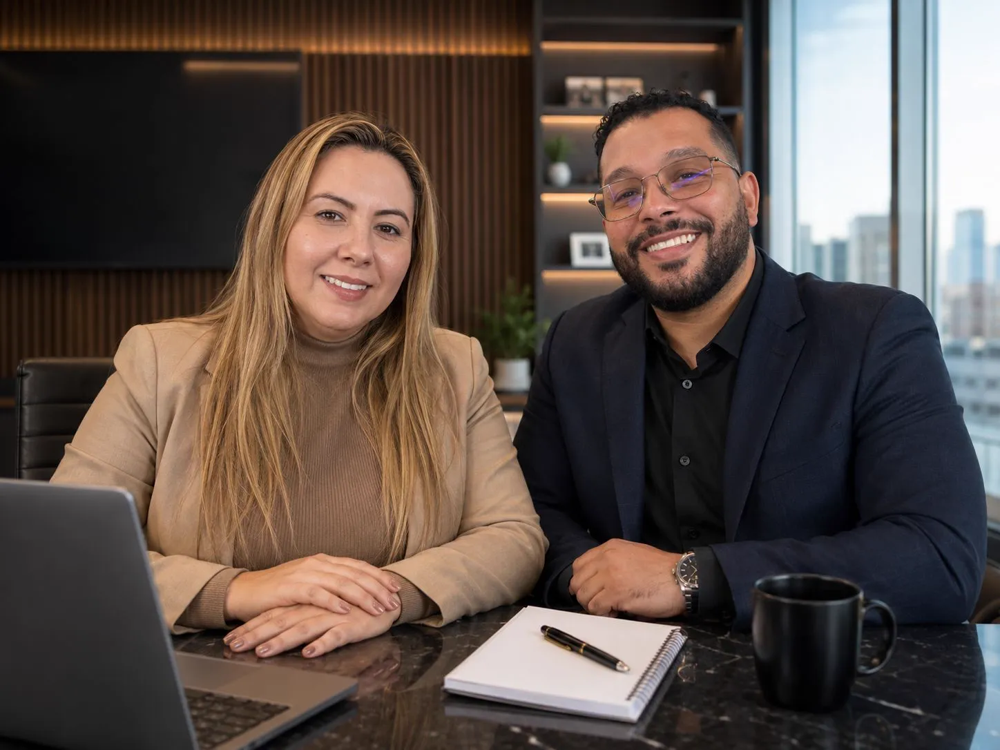

Execução Contábil
Base técnica sólida em todas as decisões. Escrituração completa, conciliações, demonstrações financeiras e suporte gerencial estruturado.

A Tezoni Vieira é a contabilidade que une, em uma única estrutura, execução contábil completa, engenharia tributária ativa e suporte jurídico consultivo. Para empresas que querem mais do que cumprir obrigação — querem transformar tributos em vantagem competitiva.
E não é por má-fé do contador. É por causa de um modelo de mercado que está estruturalmente quebrado.
No Brasil, contabilidade e gestão tributária seguem caminhos separados. De um lado, contabilidades operacionais focadas exclusivamente em cumprir obrigações — calcular imposto, gerar guia, entregar declaração. De outro, consultorias tributárias caras e pontuais, acessíveis apenas a grandes corporações.
Essa fragmentação cria lacunas graves. Empresas ficam expostas a riscos fiscais que poderiam ter sido evitados. Perdem oportunidades legítimas de economia. Operam sem visibilidade sobre a própria carga tributária. E descobrem o problema sempre tarde demais — em uma autuação, em uma margem que não fecha, em um crédito que ninguém recuperou.
Empresas não pagam mais impostos só porque faturam mais. Pagam mais porque não têm uma estrutura que acompanhe, analise e gerencie sua carga tributária de forma contínua.
A maioria das contabilidades opera olhando para trás. A Tezoni Vieira opera olhando para frente.
"Reativo significa descobrir o problema depois que ele aconteceu. Estratégico significa antecipá-lo, evitá-lo e transformá-lo em oportunidade."
Empresas de todo o Brasil que integraram execução contábil completa e engenharia tributária ativa para gerar economia legítima e proteção.
A inteligência fiscal nasce da integração — não da soma de serviços isolados. Por isso aqui contabilidade e gestão tributária não são produtos separados: são parte da mesma operação.
Base técnica sólida em todas as decisões. Escrituração completa, conciliações, demonstrações financeiras e suporte gerencial estruturado.
Inteligência fiscal contínua. Revisão de regime, classificação fiscal, simulações comparativas e administração de créditos em tempo real.
Segurança preventiva em cada estratégia. Análise normativa, fundamentação técnica e respaldo legal em toda decisão tributária.
Acompanhamento permanente e proativo. Monitoramento mensal de impacto tributário, riscos fiscais e oportunidades legítimas.
"Quando os quatro operam juntos, a empresa conquista o que nenhuma contabilidade tradicional entrega: previsibilidade, economia e proteção."
O modelo Tezoni Vieira foi construído para empresas que entenderam que gestão tributária não é commodity — é vantagem competitiva. Atendemos empresas de todos os portes em todo o território brasileiro.
Para empresas que querem reduzir legalmente sua carga tributária, aproveitando todas as oportunidades previstas na legislação.
Para empresas que têm dúvidas se operam no regime e enquadramento mais vantajoso para sua operação atual.
Para empresas que precisam de previsibilidade para planejar investimentos, expansões e decisões com segurança.
Para empresas que querem operar com total conformidade, eliminando riscos de autuações e passivos tributários ocultos.
Para empresas em fase de expansão que precisam de uma estrutura tributária que acompanhe a evolução do negócio.
Para empresas que querem transformar imposto em variável estratégica — controlável, otimizável e administrável.
Sua empresa não paga separadamente por cada serviço. Toda a estrutura Tezoni Vieira — contabilidade completa e gestão tributária estratégica — está incluída em um único custo mensal.
Lançamentos, conciliações, balanço, DRE e livros digitais.
Apuração de tributos e obrigações federais, estaduais e municipais com precisão.
Folha de pagamento, encargos, eSocial e gestão trabalhista integrada.
Planejamento contínuo, simulações comparativas e revisão diária de operações.
Identificação proativa, memórias de cálculo auditáveis e maximização do aproveitamento.
Orientações normativas, análises preventivas e consultas técnicas sob demanda.
Contato direto com a equipe técnica. Sem central, sem robô, sem atendente terceirizado.
"Você investe em contabilidade. Recebe excelência em todos os departamentos."
Nossa operação é integralmente digital, com atendimento direto e equipe técnica especializada. Atendemos empresas de qualquer região do país com a mesma profundidade e proximidade.
Contato com a equipe técnica que cuida do seu CNPJ. Sem intermediários.
Toda a estrutura de envio de documentos, relatórios e comunicação acontece de forma online e segura.
Atendemos empresas em todos os estados, com domínio de obrigações federais, estaduais e municipais.
A maioria das empresas não sofre com falta de faturamento. Sofre com falta de estrutura estratégica integrada. A carga tributária, quando não administrada com inteligência, corrói silenciosamente a margem — e a maioria das organizações sequer percebe o quanto está pagando a mais.
O mercado oferece soluções fragmentadas: um escritório para a contabilidade, outro para consultoria tributária, um terceiro para defesa jurídica. A Tezoni Vieira integra todos esses pilares em uma única operação coordenada, com visão 360° da sua situação fiscal.
Cada lançamento contábil alimenta a inteligência tributária. Cada estratégia fiscal é sustentada por fundamentação jurídica. Cada crédito identificado é aproveitado com segurança. Esse ciclo virtuoso é o que transforma custo tributário em vantagem competitiva real.
Contábil, Fiscal, Pessoal, Tributário e Jurídico operando como uma única estrutura.
Federal, estadual e municipal. Nada fora do radar, nada deixado para depois.
Acompanhamento contínuo, ininterrupto. Imposto não é evento. É operação.
Receba um diagnóstico tributário inicial conduzido pela nossa equipe técnica. Sem compromisso, sem custo. Em até 30 minutos no horário comercial.
Tezoni Vieira — Onde a contabilidade encontra a inteligência tributária.